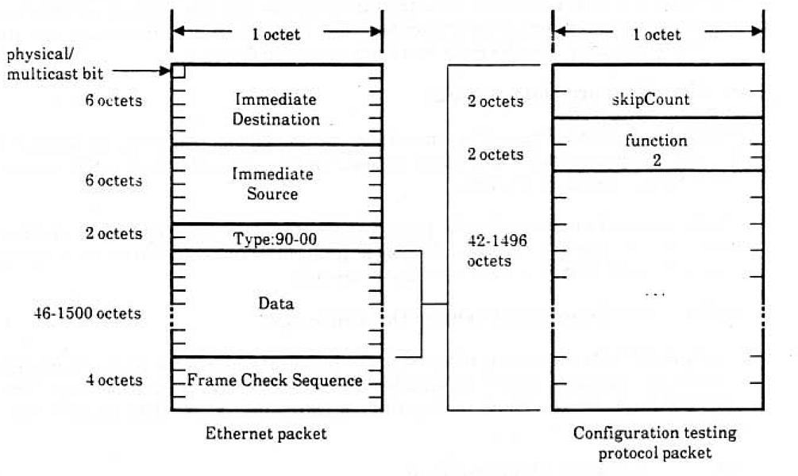
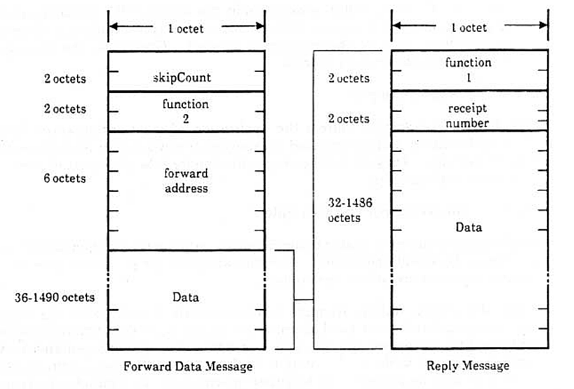

CTP
Every Ethernet host is required to implement a protocol called the Configuration-Test-Protocol. to assist troubleshooting.
ETHERNET CONFIGURATION TESTING PROTOCOL
The Ethernet Configuration Testing Protocol provides a minimum testing capability of communication between stations on an Ethernet. It is the only Client Layer protocol specified in this document and has the only assigned Ethernet type field value in this document. All Ethernet stations must support the configuration testing functions.
1 Goals
The goals of the Ethernet Configuration Testing Protocol specification are:
- Provide the required functions to enable all forms of multi-station loop tests that are necessary to diagnose a station's ability to communicate.
- Allow each station to assume the responsibility to diagnose its own ability to communicate.
- Allow a network management station to diagnose any Other stations ability to communicate.
- Minimize processing and memory requirements.
1.1 Configuration Testing Functions
A station using the Configuration Testing Protocol can ascertain the following:
- The ability to communicate with a specific remote station.
- The ability to communicate With some remote station.
- With the help of a third party station. the ability to hear or to be heard by a specific station.
1.2 Conformance Requirements
In order to support the above functions and to provide for communication checking by a network management entity, all Ethernet stations must implement a Configuration Server module with the following capabilities.
The Configuration Server receives datagrams addressed to its station's Ethernet physical address and to the Ethernet broadcast address whenever the Data Link is turned on.
The Configuration Server must receive and process datagrams as large as the largest datagram transmitted or received by any client layer module at that station. It must also receive and process datagrams having an Ethernet Data field (ie. loopback protocol frame) up to and including 512 octets long.
As an Option. the Configuration Server may also receive these datagrams on a fixed multicast address called the loopback assistance multicast address, in Which case the Configuration Server is called a loopback assistant. Those systems implementing this option are said to belong to the loopback assistance group.
This loopback assist multicast address has a fixed value of CF-00-00-00-00-00.
2 Functions, Loopback Frames and Protocol Messages
Loopback protocol frames hop between two or more stations until they reach their final destination. The station originating a loopback frame defines its whole route. A loopback frame contains some loopback protocol messages encapsulated within each other, as described in Sections 3 and 4.
There are the following two types of messages in this protocol.
- 1. Reply : A message homebound to its final destination, is. the originating station; therefore this message requires no response.
- 2. Forward Data : A message to be forwarded to another station.
Multiple hop frames consist of some Forward Data messages and one Reply message. The Reply message is always the last. In practice. the final destination of a loopback frame is always the originating station and the minimum path consists of two hops: from the sender to the receiver and back to the sender.
In the interest of simplicity and efficiency. loopback Operation and message formats are designed to meet the following requirements:
- 1. All fields begin on 16—bit boundaries.
- 2. Progressive operations on the same frame (e.g., looping it back) do not change the size.
This second objective is met by encapsulating various loopback messages within each other. In addition to that encapsulation, loopback protocol frames must be encapsulated into an Ethernet packet for transmission on the Ethernet. it is important to notice that we are dealing with two different concepts of encapsulation: one is between messages belonging to the same protocol; the other is the encapsulation of message packets of a higher level into packets of a lower level in the hierarchy of protocols.
3 Encapsulation of Loopback Protocol Frames for Transmission on an Ethernet
The fact that this protocol is a higher level. Client Layer protocol. means that any frames of this protocol will be passed down to the Data Link which will encapsulate them in an Ethernet frame. On reception. the Data Link will decapsulate them. Figure 3-1 shows how a loopback protocol packet (See Section 4 For details} is encapsulated in an Ethernet packet.
In the type field of the Ethernet packet is the protocol type number associated with the Configuration Test Protocol. i.e., 90-00.
 Figure 1- A Loopback Frame encapsulated in an Ethernet packet.
4 Frame and Message Formats
This section defines the format of the Configuration Testing Protocol frames and messages. The usage of these formats is described in Section 5. The skipCount and function code fields are 16 bit binary integers: the order of transmission is: least significant octet first, i.e. from the least significant bit to the most significant bit of the least significant octet.
A Configuration Testing Protocol Frame begins with a two octet field called the skipCount. After this field there are some Configuration Testing Protocol Messages encapsulated within each other; the message begins with a two octet function code.
The values of the function codes are the Following:
- Function code Function
- 1 ===========Reply
- 2 ===========Forward Data
4.1 Reply Message
This message is recognized as a loopback reply. The message has the following format: 1) the first turn octets show the function code, i.e. the value 1; 2) the next two octets are used for a receipt number; and 3) all the remaining octets contain any arbitrary data. See the right hand side packet in figure 2.
4.2 Forward Data Message
This message gets Forwarded to some other station. The message has the following format: 1} two octets for the function code, is the value 2; 2) six octets for the forwarding address: 3} the data.
The forwarding address must be physical, and the data must consist of another message. Figure 8-2 shows a loopback protocol frame consisting of a Reply message encapsulated in a Forward Data message.
4.2.1 Restrictions on Forward Data Messages
If a Forward Data message is directed to the broadcast address or to any multicast address, this message should not encapsulate another Forward Data message. The Configuration Server may, optionally. discard messages that violate this restriction.
5 Operation of the Protocol
During the entire life time of a Configuration Test Protocol frame, the only field that changes is the skipCount, i.e. the first two octets. Its value indicates how many octets to skip after the skipCount to find the function code of the message to be processed. When 3 Forward Data message is processed. the processing station updates the SkipCount so that the next recipient will process the next following encapsulated message. Note that in order to meet the 16-bit boundary requirement. the skipCount is always an even number. Notice also that only the first two octets of the frame are altered during successive forwarding operations, while the remainder of the frame remains constant.
 Figure 2- A replay Message encapsulated in a forward data message.
The operational descriptions assume the following Configuration Test Protocol message types:
- 1. Reply : A message homebound to its final destination, i.e., the originating station: therefore this message requires no response.
- 2. Forward Data : A message to be forwarded to another station.
The Configuration Server must respond to the data link within one second of the time it receives a valid message.
The received frame is processed according to the message function code:
- 1. Reply message : The message is delivered to a higher level process.
- 2. Forward Data message
The value of the skip count is increased by the length of the function code and forwarding address (8 octets}. If the forward address is a multicast address or the broadcast address. the message is ignored. Otherwise. the message is transmitted to the forward address.
6 Usage Examples
The following examples address the application of the Configuration Testing Protocol functions. and are intended as examples of how a higher level process can use the facilities. They are neither a specification for how they must be used. nor an exhaustive test script.
6.1 Local Control Test Example
In this case, a station is unable to communicate with another station it believes is on the network and operational. The following test script can be used by the testing station to investigate the problem.
First. the testing station attempts to communicate directly with the suspect station using the simplest. two hop frame consisting of: a) a Forward Data message addressed to the suspect station. and b) a Reply message. encapsulated in the former. addressed to the testing station. If the frame is returned. communication is possible and the problem may be either intermittent; for example. the suspect station may have been down or busy. or there may be a problem with message length or data pattern. Different message lengths and/or data patterns could then be tried. On the other hand. if communication fails the test could be repeated a few times to reduce the probability of a transient error.
If the above test fails, use some other station as an assistant and attempt the same series of operations. The datagram is constructed as Follows: a) a Forward Data message to the assistant station. containing: b) a Forward Data message to the suspect station. containing: c) a Forward Data message to the assistant station. containing: d) a Reply message to the testing station. This four-message datagram obtains the full assistance of the loopback assistant.
if no assistant address is known. send a simple loopback request (ie. a two hop Frame) to the loop assistant multicast address and use the source address of any responding station as an assistant address. If there is no response to the loop assistant multicast address. the broadcast address can be tried as a last resort.
if an assistant station can communicate with the suspect station but the testing station cannot. the testing station can test for the direction in which communication does not work. The assistant station can be used to detect either transmit or receive problems. By repeating the above test with different suspect stations, it can be determined Whether the testing station or the suspect station is at fault, and isolate the problem to a particular transmitter or receiver.
In order to determine whether the suspect station can receive datagrams Sent by the testing station. use the following datagram: a) a Forward Data message to the suspect station. containing: b) a Forward Data message to the assistant station. containing: c) a Reply message to the testing station.
Similarly. use the following datagram to test whether the suspect station can successfully transmit to the testing station: a) a Forward Data message to the assistant station. containing: b) a Forward Data message to the suspect station. containing: c) a Reply message to the testing station.
When a station finds itself unable to communicate. it can report this in whatever way is available to it. An operator or control center can then respond by attempting to isolate and repair the problem.
6.2 Remote Control Test Example
When a control center receives a report that a station cannot communicate properly. It can investigate the problem. It can first diagnose its own ability to communicate With the reporting station. If this communication appears to work. the control center can similarly check its ability to communicate with the remote station that the reporting station could not reach.
If the control center can communicate with both stations. it can then use the Full assistance frame. using either station as the assistant. in order to see if they can communicate with each other. If they cannot. the control center can attempt to isolate the problem using transmit and receive assistance.